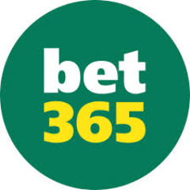
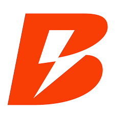
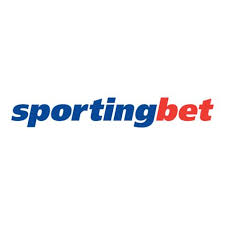
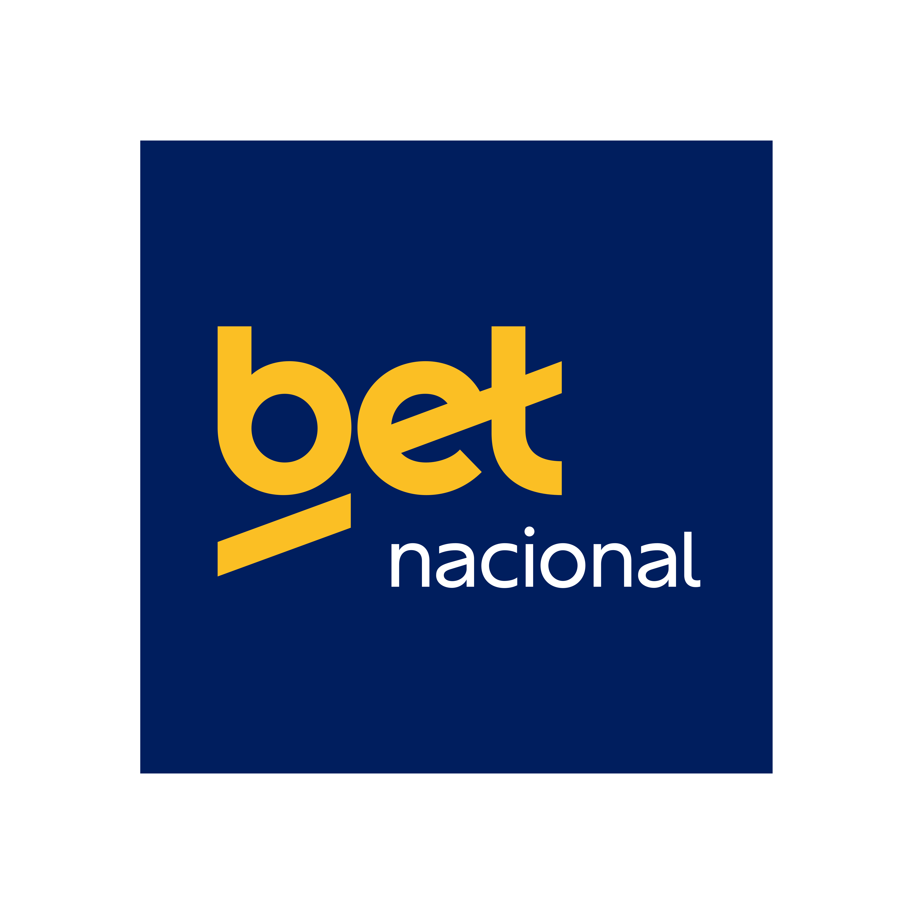

A Lei 13.756/2018 legaliza as apostas de "quota fixa", mas não cria regras de operação ou tributação. Um cheque em branco no mercado brasileiro.
Aproveitando a falta de regulamentação, centenas de sites explodem operando em paraísos fiscais, lucrando bilhões sem responder à nossa justiça.
A Lei 14.790/2023 tenta regulamentar para arrecadar impostos, mas acaba legitimando e blindando a margem de lucro garantida das casas (RTP).
| Casa | Odd A | Odd B | Margem (banca retém) |
|---|---|---|---|
| bet365 | 1,95 | 1,95 | ~2,6% |
| Betano | 1,92 | 1,92 | ~4,2% |
| Sportingbet | 1,90 | 1,90 | ~5,3% |
| Betnacional | 1,88 | 1,88 | ~6,4% |
// Odd mais alta = menos dinheiro retido pela casa. Nenhuma te faz ganhar — só te faz perder menos devagar.

Considerada referência global de odds. Movimenta bilhões investindo pesado em tecnologia e modelagem estatística.

Cresceu via patrocínios e marketing agressivo. Interface moderna, odds ligeiramente inferiores em mercados menores.

Marca tradicional focada no público recreativo. Em muitos eventos, as odds ficam abaixo da média dos concorrentes.

Cresceu no Brasil com foco 100% local: estaduais e séries menores. Fortíssimo uso de influenciadores para atração.
Sugira uma casa ou modalidade que não está aqui. Nossa equipe analisa as odds e calcula a margem.
A Ilusão do Near-Miss: O design é feito para liberar picos de dopamina. Mostrar o "quase" força a sua próxima aposta.
A Matemática Fria: O servidor decide que você vai perder antes da roleta girar. Se o RTP estourar, a vitória é bloqueada.